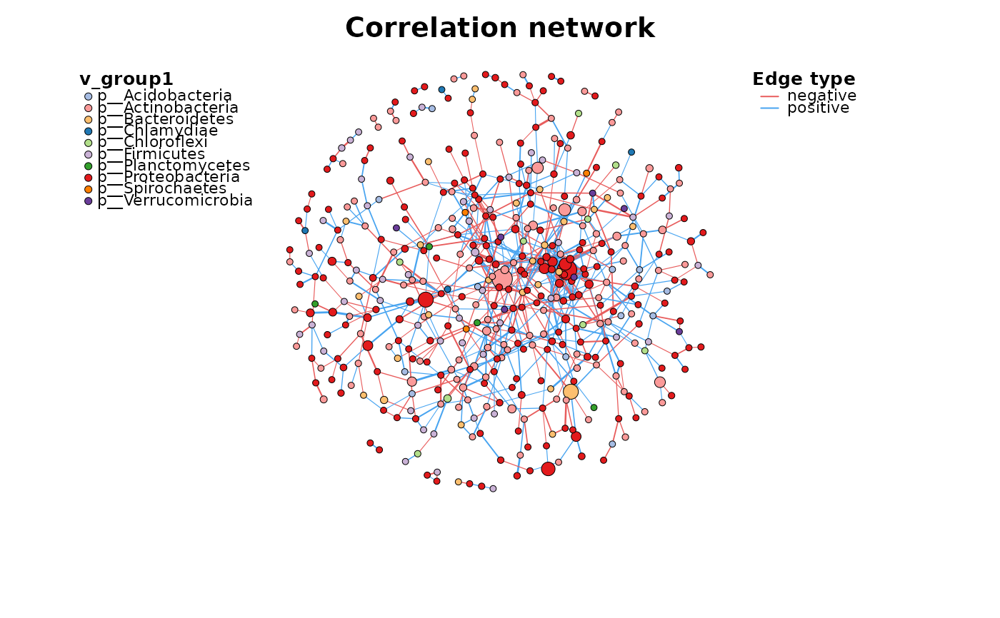
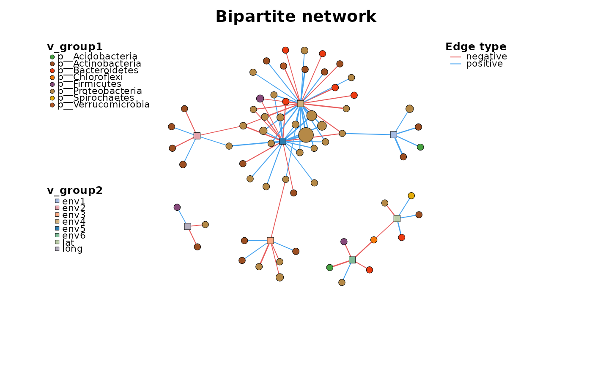
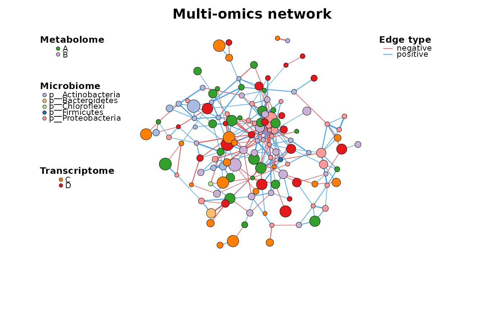

Plot a metanet
c_net_plot(
go,
coors = NULL,
...,
labels_num = NULL,
vertex_size_range = NULL,
edge_width_range = NULL,
plot_module = FALSE,
mark_module = FALSE,
mark_color = NULL,
mark_alpha = 0.3,
module_label = FALSE,
module_label_cex = 2,
module_label_color = "black",
module_label_just = c(0.5, 0.5),
pie_value = NULL,
pie_color = NULL,
legend = TRUE,
legend_number = FALSE,
legend_cex = 1,
legend_position = c(left_leg_x = -2, left_leg_y = 1, right_leg_x = 1.2, right_leg_y =
1),
group_legend_title = NULL,
group_legend_order = NULL,
color_legend = TRUE,
color_legend_order = NULL,
size_legend = FALSE,
size_legend_title = "Node Size",
edge_legend = TRUE,
edge_legend_title = "Edge type",
edge_legend_order = NULL,
width_legend = FALSE,
width_legend_title = "Edge width",
lty_legend = FALSE,
lty_legend_title = "Edge class",
lty_legend_order = NULL,
module_legend = FALSE,
module_legend_title = "Module",
module_legend_order = NULL,
pie_legend = FALSE,
pie_legend_title = "Pie part",
pie_legend_order = NULL,
params_list = NULL,
rescale = FALSE,
seed = 1234
)an igraph or metanet object
the coordinates you saved
additional parameters for igraph.plotting
show how many labels, >1 indicates number, <1 indicates fraction, "all" indicates all.
the vertex size range, e.g. c(1,10)
the edge width range, e.g. c(1,10)
logical, plot module?
logical, mark the modules?
mark color
mark fill alpha, default 0.3
show module label?
module label cex
module label color
module label just, default c(0.5,0.5)
a dataframe using to plot pie (with rowname or a "name" column)
color vector
all legends
legend with numbers
character expansion factor relative to current par("cex"), default: 1
legend_position, default: c(left_leg_x=-1.9,left_leg_y=1,right_leg_x=1.2,right_leg_y=1)
group_legend_title, length must same to the numbers of v_group
group_legend_order vector
logical
color_legend_order vector
logical
size_legend_title
logical
edge_legend_title
edge_legend_order vector, e.g. c("positive","negative")
logical
width_legend_title
logical
lty_legend_title
lty_legend_order
logical
module_legend_title
module_legend_order
logical
pie_legend_title
pie_legend_order
a list of parameters, e.g. list(edge_legend = TRUE, lty_legend = FALSE), when the parameter is duplicated, the format argument will be used rather than the argument in params_list.
Logical constant, whether to rescale the coordinates to the (-1,1).
random seed, default:1234, make sure each plot is the same.
a network plot
Other plot:
as.ggig(),
input_cytoscape(),
input_gephi(),
netD3plot(),
olympic_rings_net(),
plot.ggig(),
twocol_edgelist(),
venn_net()
data("c_net")
c_net_plot(co_net)

c_net_plot(co_net2)

c_net_plot(multi1)
